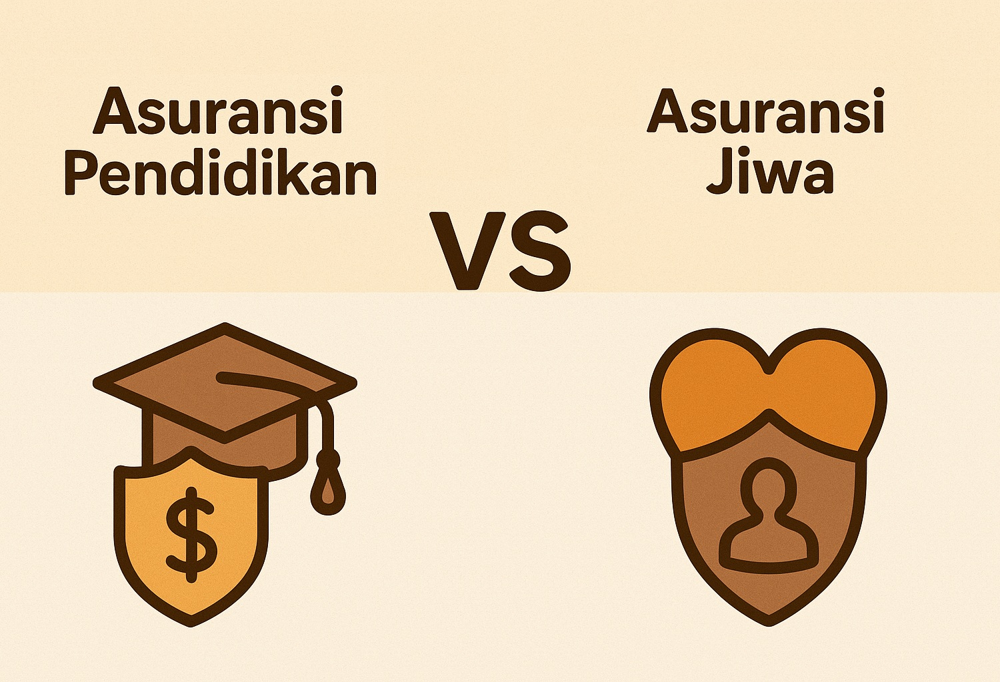
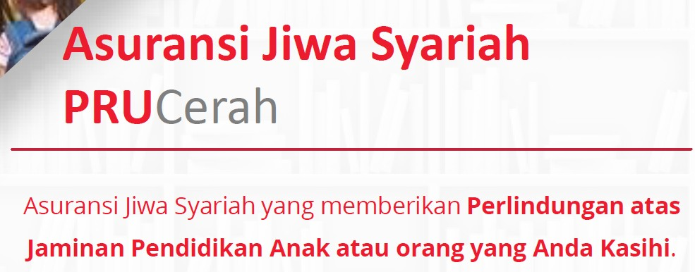

Kamu mungkin pernah dengar ada yang bilang, “Asuransi pendidikan itu cuma akal-akalan agen aja, sebenarnya itu asuransi jiwa dikemas seolah-olah buat pendidikan!” Atau mungkin kamu sempat baca di internet opini-opini yang menyebut bahwa asuransi pendidikan itu sesat, bahkan dibilang tidak ada asuransi pendidikan di Indonesia.
Wah, ini bahaya banget kalau diterima mentah-mentah! Karena kamu sedang terjebak dalam narasi misleading yang dibungkus dengan percaya diri oleh orang-orang yang awam dengan cara kerja asuransi—dan yang lebih parah, tidak sedikit agen asuransi perusahaan lain yang juga membuat narasi ini karena produk di perusahaannya belum ada yang sebanding dengan Prudential, sehingga banyak orang jadi batal mempersiapkan masa depan pendidikan anaknya gara-gara termakan opini menyesatkan ini. Yuk, kita bongkar narasi menyesatkan ini sekaligus buktikan faktanya!
Pertama, Yuk Bedakan Dulu: Asuransi Jiwa vs Asuransi Pendidikan
Banyak orang terjebak dalam pengertian keliru: “Asuransi pendidikan = baru cair kalau meninggal”. Padahal itu hanya salah satu jenis asuransi, yaitu asuransi jiwa murni.
Sedangkan asuransi pendidikan adalah produk asuransi yang memberikan manfaat tunai bertahap di masa depan, sesuai rencana pendidikan anak, bahkan kalau orang tuanya meninggal dunia sebelum waktunya. Biasanya dimulai saat anak masuk SMP, SMA, dan perguruan tinggi. Dan penting: manfaat ini tetap cair meskipun orang tua (tertanggung) tetap hidup sehat!
Jadi, beda kan dengan asuransi jiwa atau dengan kalau kamu nabung sendiri? Kalau kenapa-kenapa, dana pendidikan anak bisa langsung terhenti, tetapi dengan adanya asuransi pendidikan maka dana pendidikan anak dijamin pasti cair terlepas orang tuanya meninggal ataupun tidak. Nah, sekarang kita masuk ke produk yang sering disalahpahami.
PRUCerah Plus dari Prudential: Asuransi Pendidikan yang Sesungguhnya
PRUCerah Plus adalah produk dari Prudential yang dirancang khusus untuk kebutuhan dana pendidikan anak. Produk ini bukan cuma menjanjikan “kalau meninggal baru cair”, tapi:
- ✅ Dana pendidikan terjadwal — pasti cair sesuai dengan jenjang pendidikan anak yang ditentukan di awal, bukan menunggu kematian
- ✅ Ada proteksi jiwa orang tua — jadi pendidikan tetap aman walau terjadi risiko meninggal dunia, tanpa perlu bayar premi lagi
- ✅ Manfaat bebas premi — kalau orang tua meninggal dunia/cacat total dan tetap hidup/terdiagnosa 1 dari 60 penyakit kritis, premi berhenti dibayar tapi manfaat tetap jalan
- ✅ Fleksibel — bisa disesuaikan dengan kebutuhan dan kondisi finansial keluarga, mulai dari Rp 500 ribuan per bulan
- ✅ Tersedia juga dalam syariah — untuk kamu yang ingin perlindungan sesuai dengan prinsip syariah
Sehingga produk ini hybrid: ada proteksi, ada kepastian dana. Dan yang terpenting produk ini legal, diawasi OJK, dan sudah ribuan orang tua pakai. Bukan gimmick, bukan tipuan.
Lalu Kenapa Banyak Yang Menyudutkan PRUCerah Plus?
Jawabannya mudah ditebak, karena:
- 👉 Banyak agen asuransi dari perusahaan lain tidak punya produk serupa di masanya, jadi lebih memilih menggiring opini publik seolah-olah konsepnya salah. Padahal bukan salah, mereka saja yang belum siap
- 👉 Sebagian orang juga tidak membaca detail produknya dan menilai hanya dari permukaan
- 👉 Ada juga yang belum paham bedanya produk tradisional dengan unit link, sehingga semua dianggap sama: “Kalau bukan murni proteksi, pasti tipu-tipu”
Padahal, justru PRUCerah Plus menjawab kebutuhan banyak keluarga: ingin proteksi, ingin rencana dana pendidikan, dan ingin ketenangan. Tapi sekarang kamu sudah tahu yang sebenarnya. Dan orang bijak tidak dua kali tertipu oleh suara yang paling keras—tapi justru belajar dari suara yang paling benar.
Jadi, Masih Percaya Kalau Asuransi Pendidikan Itu Tidak Ada?
Kalau kamu termasuk orang tua yang sadar bahwa biaya pendidikan terus naik setiap tahun, tapi tetap ingin ada proteksi jika terjadi apa-apa denganmu, maka PRUCerah Plus adalah solusinya. Bukan sekadar nabung, bukan sekadar investasi, tapi kamu sedang mewariskan kepastian dengan kombinasi perlindungan dan rencana yang disusun dengan matang.
Kamu kerja keras hari ini untuk masa depan anak, kan? Tapi kita semua tahu hidup itu penuh ketidakpastian. Jangan sampai perjuanganmu sia-sia hanya karena tidak ada yang melanjutkan mimpimu untuk anak ketika kamu sudah tiada.
Kesimpulan
Jangan sampai karena termakan opini sesat dari yang tidak paham asuransi, masa depan pendidikan anakmu jadi taruhan.
Asuransi pendidikan itu nyata. PRUCerah Plus adalah buktinya. Dirancang untuk orang tua yang cerdas, sayang keluarga, dan ingin memberikan yang terbaik kepada anak.
PRUCerah Plus bukan cuma solusi, tapi bisa jadi keputusan terbaik yang kamu ambil untuk anakmu hari ini.